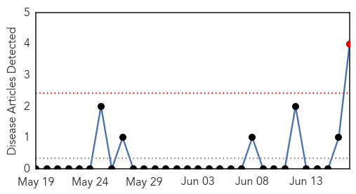
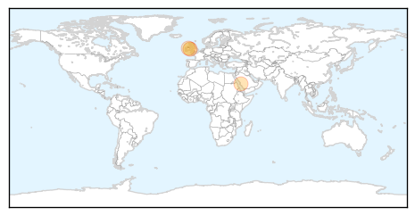
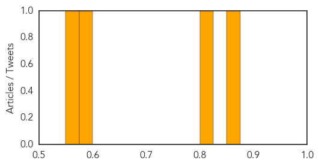
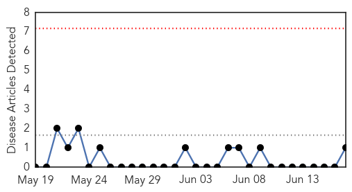
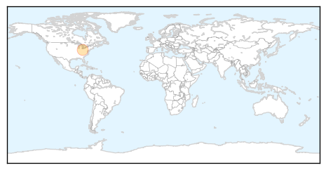

Yellow Fever
30-Day Web Trend
1 alerts, 0 warnings

30-Day Twitter Trend
0 alerts, 0 warnings

Article Locations
Article Confidences
Top Articles:
- 0.869
- Travellers urged to take care of their own healthHealthcare
- 0.804
- Priest died after suffering 'very rare adverse reaction' to yellow fever vaccine, an inquest heard
- 0.582
- Priest dies after reaction to yellow fever vaccine taken for trip to Africa
- 0.562
- Priest died after adverse reaction to yellow fever vaccine
Top Tweets:
-
No tweets found for Jun 17, 2014
Mumps
30-Day Web Trend
0 alerts, 0 warnings

30-Day Twitter Trend
0 alerts, 0 warnings

Article Locations
Article Confidences

Top Articles:
Top Tweets:
-
No tweets found for Jun 17, 2014